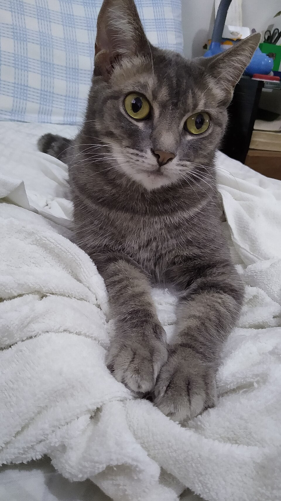
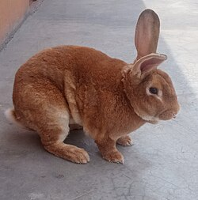

¡Adopción urgente!
Toby
Perro · 8 años · Tranquilo y muy cariñoso
Conocer a TobyEncuentra a tu nuevo mejor amigo
¡Adopción urgente!
Perro · 8 años · Tranquilo y muy cariñoso
Conocer a Toby
Gata · 2 años · Juguetona y curiosa
Conocer a Luna
Conejo · 1 año · Le encanta la zanahoria
Conocer a Copo